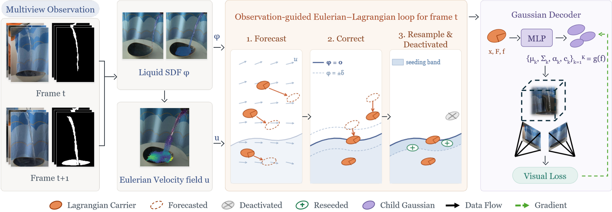

Abstract
The SplashSplat benchmark
Twenty real scenes of liquid being poured into bowls and tanks, recorded by a seven-camera 4K rig with manually refined per-view liquid masks. The video sweeps from the captured frames to their masks.
Method overview

Novel-view synthesis on real captures
CapturedDeformable-3DGSSpacetimeGaussians4D-Scaffold-GSOurs
CapturedDeformable-3DGSSpacetimeGaussians4D-Scaffold-GSOurs
Temporal interpolation
Captured (10 fps)Deformable-3DGSSpacetimeGaussians4D-Scaffold-GSOurs
Style transfer
ReconstructionAmber dyeBrown dyeGreen dye
Citation
@inproceedings{splashsplat,
title = {SplashSplat: Reconstructing Splashing Liquids from Real-World Multi-View Videos},
author = {TODO},
booktitle = {TODO},
year = {TODO}
}